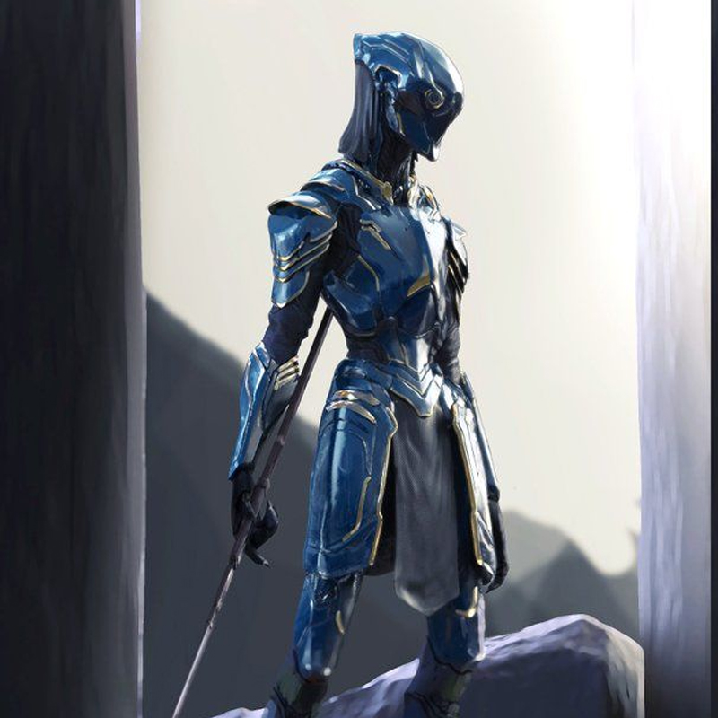

Operative

You’re a shadow. You move swiftly, strike suddenly, and always have an escape plan. You’re a consummate professional, and you always get the job done, whether it’s scouting enemy lines, hunting down criminals, stealing and smuggling items, or assassinating key figures.
As an operative, you're skilled in a wide variety of disciplines and specialties, and use speed, mobility, and your quick wits rather than relying on heavy weapons.
You excel at the art of surprise, whether it’s sniping targets from cover or striking while their backs are turned. Your cause may be righteous, but you have no problem fighting dirty—achieving your objective is all that matters.
Hit Points: 6
Stamina Points: 6 + Constitution Modifier
Key Ability Score
Your Dexterity helps you to infiltrate, get into position, escape danger, and make decisive shots with your weapon, so Dexterity is your key ability score.
High Intelligence boosts your skills, and Charisma aids in your interactions with other characters.
Class Skills
Skills ranks per level: 8 + intelligence modifier
- Acrobatics (Dex)
- Athletics (Str)
- Bluff (Cha)
- Computers (Int)
- Culture (Int)
- Disguise (Cha)
- Engineering (Int)
- Intimidate (Cha)
- Medicine (Int)
- Perception (Wis)
- Piloting (Dex)
- Profession (Cha, Int, or Wis)
- Sense Motive (Wis)
- Sleight of Hand (Dex)
- Stealth (Dex)
- Survival (Wis)
Proficiencies
Armor Proficiency
- Light Armor
Weapon Proficiency
- Basic Melee Weapons
- Small Arms
- Sniper Weapons
Spaceship Proficiency
- Soon™
Leveling
| Class Level | Base Attack Bonus | Fort Save Bonus | Ref Save Bonus | Will Save Bonus | Class Features |
|---|---|---|---|---|---|
| 1st | +0 | +0 | +2 | +2 | Operative’s edge +1, specialization, trick attack +1d4 |
| 2nd | +1 | +0 | +3 | +3 | Evasion, operative exploit |
| 3rd | +2 | +1 | +3 | +3 | Operative’s edge +2, quick movement (+10 ft.), trick attack +1d8, weapon specialization |
| 4th | +3 | +1 | +4 | +4 | Debilitating trick, operative exploit |
| 5th | +3 | +1 | +4 | +4 | Specialization exploit, trick attack +3d8 |
| 6th | +4 | +2 | +5 | +5 | Operative exploit |
| 7th | +5 | +2 | +5 | +5 | Operative’s edge +3, specialization skill mastery, trick attack +4d8, uncanny agility |
| 8th | +6 | +2 | +6 | +6 | Operative exploit, triple attack |
| 9th | +6 | +3 | +6 | +6 | Quick movement (+20 ft.), trick attack +5d8 |
| 10th | +7 | +3 | +7 | +7 | Operative exploit |
| 11th | +8 | +3 | +7 | +7 | Operative’s edge +4, specialization power, trick attack +6d8 |
| 12th | +9 | +4 | +8 | +8 | Operative exploit |
| 13th | +9 | +4 | +8 | +8 | Quad attack, trick attack +7d8 |
| 14th | +10 | +4 | +9 | +9 | Operative exploit |
| 15th | +11 | +5 | +9 | +9 | Operative’s edge +5, quick movement (+30 ft.), trick attack +8d8 |
| 16th | +12 | +5 | +10 | +10 | Operative exploit |
| 17th | +12 | +5 | +10 | +10 | Double debilitation, trick attack +9d8 |
| 18th | +13 | +6 | +11 | +11 | Operative exploit |
| 19th | +14 | +6 | +11 | +11 | Operative’s edge +6, trick attack +10d8 |
| 20th | +15 | +6 | +12 | +12 | Operative exploit, supreme operative |